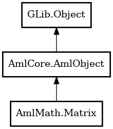

Matrix
Object Hierarchy:

Description:
public class Matrix :
AmlObject
Content:
Creation methods:
Methods:
- public Matrix copy ()
Copies this object
- public double det () throws MatrixError
Returns determinant of matrix
- public double[] get_arr ()
Returns copy of GSL Matrix data
- public uint get_columns ()
Number of columns
- public uint get_rows ()
Number of rows
- public double get_val (uint row, uint column) throws MatrixError
Returns element by row and column indeces
- public bool is_diagonal ()
Returns true if this matrix is diagonal
- public void set_arr (double[] array) throws MatrixError
Copies array to GSL Matrix data
- public void set_val (uint row, uint column, double value) throws MatrixError
Sets element by row and column indeces
Inherited Members:
All known members inherited from class GLib.Object
- @get
- @new
- @ref
- @set
- add_toggle_ref
- add_weak_pointer
- bind_property
- connect
- constructed
- disconnect
- dispose
- dup_data
- dup_qdata
- force_floating
- freeze_notify
- get_class
- get_data
- get_property
- get_qdata
- get_type
- getv
- interface_find_property
- interface_install_property
- interface_list_properties
- is_floating
- new_valist
- new_with_properties
- newv
- notify
- notify_property
- ref_count
- ref_sink
- remove_toggle_ref
- remove_weak_pointer
- replace_data
- replace_qdata
- set_data
- set_data_full
- set_property
- set_qdata
- set_qdata_full
- set_valist
- setv
- steal_data
- steal_qdata
- thaw_notify
- unref
- watch_closure
- weak_ref
- weak_unref